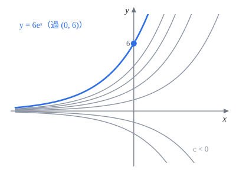
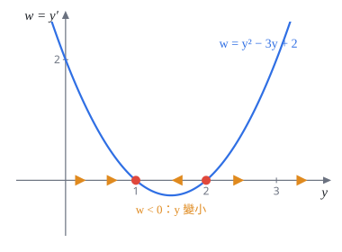
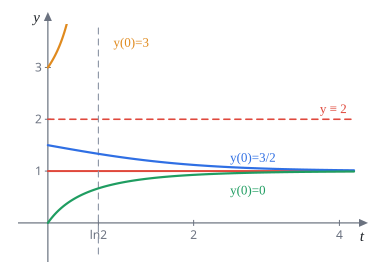
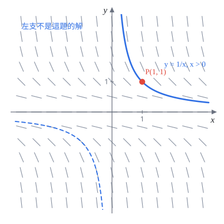

Week 15 微分方程初探
AP Calculus I（115 學年）Lecture Note 15 教學與題解
講義筆誤p.127（§15.3 例題解答）：$v'(t)=(1-\alpha)K(t)^{-\alpha}K'(t)$，講義寫成 $K'(x)$。見題 16。
講義筆誤p.128（§15.4）：「且在 $x=2,\ y=\frac14$ 點上滿足」應為 $y=\frac12$，也就是點 $Q(2,\frac12)$；$-\frac14$ 是那一點的斜率 $-y^2$。
講義筆誤p.129 Case 1：$e^{-\ln x}=\frac1x$，不是 $\frac{-1}x$。積分因子差一個常數倍不影響結果，所以後面的答案仍然對。見題 19。
到目前為止，題目的答案都是一個數字或一條式子。微分方程（differential equation）的答案是一個函數：題目給你「$y$ 和它的導數之間的關係」，要你找出 $y=y(x)$ 長什麼樣子。這週只處理一階常微分方程（ODE），「一階」是指式子裡最多只出現 $y'$。
最簡單的例子是 $y'=y$：哪個函數微分後等於自己？$y=e^x$ 可以，$y=2e^x$、$y=-5e^x$ 也可以。一般解是 $y=ce^x$，$c$ 是任意實數，有無限多個。
如果再加一個初值條件（initial condition），例如 $y(0)=6$，就是規定曲線要通過 $(0,6)$，代進去得 $c=6$，只剩 $y=6e^x$ 一條。這種「方程式＋初值」的題目叫初值問題（IVP）。

解題套路不管用什麼方法解出來，都可以代回去驗算：把答案微分，代進原方程式看兩邊是否相等，再檢查初值。這比對答案還可靠。
15.1 分離變數法
適用的形狀是右邊能拆成「只有 $x$ 的函數」乘「只有 $y$ 的函數」：
$$\frac{dy}{dx}=f(x)\,g(y).$$做法就是把 $\frac{dy}{dx}$ 當成分數，把 $y$ 全部搬到左邊、$x$ 全部搬到右邊，然後兩邊各自積分：
$$\frac{dy}{g(y)}=f(x)\,dx\quad\Longrightarrow\quad\int\frac{dy}{g(y)}=\int f(x)\,dx.$$- 分離：$y$ 和 $dy$ 放一邊，$x$ 和 $dx$ 放另一邊。
- 兩邊積分，只需要在一邊加 $+C$。
- 有初值就代進去求 $C$。
結果常常是 $y$ 和 $x$ 混在一起的隱函數，解不出 $y=\cdots$ 也沒關係，題目沒要求就可以停在隱函數。
為什麼可以「把 $dy/dx$ 拆開」？其實是 Week 11 的變數變換：$\frac1{g(y)}\frac{dy}{dx}=f(x)$ 兩邊對 $x$ 積分，左邊 $\int\frac1{g(y(x))}y'(x)\,dx$ 令 $u=y(x)$ 就是 $\int\frac{du}{g(u)}$。
15.1.1 初值問題
題 1解 $\dfrac{dy}{dx}=\dfrac{y\cos x}{1+y^2}$，且 $y(0)=1$。
右邊是 $\cos x\cdot\frac y{1+y^2}$，可以分離。兩邊乘 $\frac{1+y^2}y$：
$$\frac{1+y^2}y\,dy=\cos x\,dx\quad\Longrightarrow\quad\int\left(\frac1y+y\right)dy=\int\cos x\,dx.$$ $$\ln|y|+\frac{y^2}2=\sin x+C.$$代 $x=0,\ y=1$：$0+\frac12=0+C$，$C=\frac12$。
$y=0$ 是另一個解（常數解），解曲線不會穿過它，所以從 $y(0)=1$ 出發的解一直保持 $y\gt0$，絕對值可以拿掉。這條式子解不出 $y=\cdots$，答案就是隱函數。
$\ln y+\dfrac{y^2}2=\sin x+\dfrac12$
15.1.2 常數解
分離時要除以 $g(y)$，如果 $g(y_0)=0$，這一步就不合法。但這時 $y\equiv y_0$（常數函數）本身就是解：左邊 $y'=0$，右邊 $f(x)g(y_0)=0$。所以分離之前，先把 $g(y)=0$ 的根找出來，它們是常數解，要另外列。
題 2考慮 $\dfrac{dy}{dx}=1-y^2$。
(a) 找出所有常數函數解。
(b) 設 $0\lt y\lt1$，找出所有非常數解。
(a) 常數 $y=k$ 代入：左邊 $0$，所以要 $1-k^2=0$，$k=\pm1$。
(b) $0\lt y\lt1$ 時 $1-y^2\ne0$，可以除：
$$\int\frac{dy}{1-y^2}=\int dx.$$左邊用部分分式（Week 14）：$\dfrac1{1-y^2}=\dfrac12\left(\dfrac1{1-y}+\dfrac1{1+y}\right)$，通分就能驗證。所以
$$\frac12\Big(-\ln|1-y|+\ln|1+y|\Big)=x+C\quad\Longrightarrow\quad\ln\frac{1+y}{1-y}=2x+2C.$$（$0\lt y\lt1$ 時分子分母都正，絕對值拿掉。）取指數，令 $A=e^{2C}\gt0$：
$$\frac{1+y}{1-y}=Ae^{2x}\quad\Longrightarrow\quad1+y=Ae^{2x}-Ae^{2x}y\quad\Longrightarrow\quad y=\frac{Ae^{2x}-1}{Ae^{2x}+1}.$$$0\lt y\lt1$ 要 $Ae^{2x}\gt1$。若寫 $A=e^{-2c}$，答案就是 $y=\dfrac{e^{2(x-c)}-1}{e^{2(x-c)}+1}$，定義在 $x\gt c$。
驗算：$y'=\dfrac{4Ae^{2x}}{(Ae^{2x}+1)^2}$，$1-y^2=\dfrac{(Ae^{2x}+1)^2-(Ae^{2x}-1)^2}{(Ae^{2x}+1)^2}=\dfrac{4Ae^{2x}}{(Ae^{2x}+1)^2}$，相等。
(a) $y=1$、$y=-1$ (b) $y=\dfrac{Ae^{2x}-1}{Ae^{2x}+1}$，$A\gt0$，$x\gt-\frac12\ln A$
15.1.3 先換變數再分離
有些方程不能直接分離，但右邊只跟 $\frac yx$ 有關（或某個組合 $x+y$ 之類），令那團為新的未知函數 $u$，常常就變成可分離。以 $u=\frac yx$ 為例：$y=ux$，積法則得
$$y'=u+xu'.$$這條要背，代進去之後 $u$ 那項通常會消掉。
題 3用 $u=\frac yx$ 解 $xy'=y+xe^{y/x}$。
$y=ux$，$y'=u+xu'$，代入：
$$x(u+xu')=ux+xe^u\quad\Longrightarrow\quad x^2u'=xe^u\quad\Longrightarrow\quad u'=\frac{e^u}x.$$可以分離了：
$$\int e^{-u}\,du=\int\frac{dx}x\quad\Longrightarrow\quad-e^{-u}=\ln|x|+C.$$所以 $e^{-y/x}=-C-\ln|x|$。把 $-C$ 改叫 $C$，取 $\ln$ 再乘 $-x$：
$$-\frac yx=\ln\big(C-\ln|x|\big)\quad\Longrightarrow\quad y=-x\ln\big(C-\ln|x|\big).$$定義在 $C-\ln|x|\gt0$ 的範圍。
$y=-x\ln\big(C-\ln|x|\big)$
題 4求解：
(a) $y'=(x^2-4)(3y+2)$
(b) $y'=(2x+3)(y^2-4)$，$y(0)=-1$
(c) $xy'+y=y^2$，$y(1)=-1$
(d) $xyy'+4x^2+y^2=0$，$y(2)=-7$，$x\gt0$
(a) 先找常數解：$3y+2=0$，$y=-\frac23$。其他情況分離：
$$\int\frac{dy}{3y+2}=\int(x^2-4)\,dx\quad\Longrightarrow\quad\frac13\ln|3y+2|=\frac{x^3}3-4x+C_1.$$乘 3 取指數：$|3y+2|=e^{3C_1}e^{x^3-12x}$，正負號併進常數：$3y+2=Ae^{x^3-12x}$，$A\ne0$。允許 $A=0$ 的話剛好把常數解也包進來。
(b) 分離後左邊用部分分式 $\dfrac1{y^2-4}=\dfrac14\left(\dfrac1{y-2}-\dfrac1{y+2}\right)$：
$$\frac14\ln\left|\frac{y-2}{y+2}\right|=x^2+3x+C.$$所以 $\dfrac{y-2}{y+2}=Ae^{4(x^2+3x)}$。代 $y(0)=-1$：$\dfrac{-3}{1}=A$，$A=-3$。令 $E=e^{4x(x+3)}$：
$$y-2=-3E(y+2)\quad\Longrightarrow\quad y(1+3E)=2-6E\quad\Longrightarrow\quad y=\frac{2-6E}{1+3E}.$$(c) 移項 $xy'=y^2-y=y(y-1)$，分離：
$$\int\frac{dy}{y(y-1)}=\int\frac{dx}x,\qquad\frac1{y(y-1)}=\frac1{y-1}-\frac1y.$$$\ln\left|\dfrac{y-1}y\right|=\ln|x|+C$，所以 $\dfrac{y-1}y=Ax$。代 $x=1,\ y=-1$：$\frac{-2}{-1}=A$，$A=2$。$1-\frac1y=2x$，$\frac1y=1-2x$。
(d) 不能直接分離。每一項都是 $x,y$ 的二次（$xyy'$ 裡 $y'$ 算零次），這種方程用 $u=\frac yx$：$y=ux$，$y'=u+xu'$。
$$x\cdot ux\,(u+xu')+4x^2+u^2x^2=0\quad\Longrightarrow\quad xuu'=-(2u^2+4).$$分離：
$$\int\frac{u}{2u^2+4}\,du=-\int\frac{dx}x\quad\Longrightarrow\quad\frac14\ln(2u^2+4)=-\ln x+C.$$（左邊令 $w=2u^2+4$，$dw=4u\,du$。）乘 4 取指數：$2u^2+4=\dfrac A{x^4}$。換回 $u=\frac yx$，乘 $\frac{x^2}2$：
$$y^2=\frac A{2x^2}-2x^2.$$代 $y(2)=-7$：$49=\frac A8-8$，$A=456$，$y^2=\dfrac{228}{x^2}-2x^2=\dfrac{228-2x^4}{x^2}$。$y(2)\lt0$，取負根。
(a) $y=-\frac23$ 或 $y=Ae^{x^3-12x}-\frac23$ (b) $y=\dfrac{2-6e^{4x(x+3)}}{1+3e^{4x(x+3)}}$ (c) $y=\dfrac1{1-2x}$ (d) $y=-\sqrt{\dfrac{228-2x^4}{x^2}}$（皆與講義相同）
(d) 還有另一種做法：令 $w=y^2$，$w'=2yy'$，方程變成 $\frac x2w'+4x^2+w=0$，是下一節的一階線性方程。同一題常有不只一條路。
有時候不用解出 $y(t)$，光看 $y'$ 的正負就能知道解往哪裡跑。$y'\gt0$ 時 $y$ 往上，$y'\lt0$ 時往下，$y'=0$ 的地方是常數解，解曲線碰不到也穿不過（初值問題的解唯一，兩條解不會交叉）。這叫相平面分析（phase plane analysis）。
題 5考慮初值問題 $y'=y^2-3y+2$，$y(0)=\frac32$，把 $(t,y(t))$ 看成平面上從 $(0,\frac32)$ 出發的動點。
(a) 找出使 $\frac{dy}{dt}\lt0$ 的 $y$ 範圍，據此討論 $\displaystyle\lim_{t\to+\infty}y(t)$。
(b) 若 $y(0)=1$，$\displaystyle\lim_{t\to+\infty}y(t)$ 是多少？$y(0)=0$ 呢？$y(0)=3$ 呢？
提示：令 $w=y'$，在平面上畫 $w=y^2-3y+2$。
$w=y^2-3y+2=(y-1)(y-2)$，開口向上的拋物線，和橫軸交在 $y=1,2$：
- $y\lt1$：$w\gt0$，$y$ 增加
- $1\lt y\lt2$：$w\lt0$，$y$ 減少
- $y\gt2$：$w\gt0$，$y$ 增加
$y=1$ 和 $y=2$ 是常數解。


(a) $\frac{dy}{dt}\lt0 \iff 1\lt y\lt2$。從 $\frac32$ 出發，$y$ 一路減少，但不能穿過常數解 $y=1$，只能越來越靠近，所以 $\lim_{t\to\infty}y(t)=1$。
其實這題也能解出來：分離後 $\ln\left|\frac{y-2}{y-1}\right|=t+C$，代 $y(0)=\frac32$ 得 $\frac{y-2}{y-1}=-e^t$，$y=\dfrac{2+e^t}{1+e^t}\to1$，和相平面的結論一致。
(b)
- $y(0)=1$：$y\equiv1$ 是常數解，極限 $1$。
- $y(0)=0$：$y\lt1$ 時 $y'\gt0$，往上爬向 $1$，同樣碰不到，極限 $1$。（實際解 $y=\frac{2e^t-2}{2e^t-1}$。）
- $y(0)=3$：$y\gt2$ 時 $y'\gt0$，而且 $y$ 越大 $y'$ 越大，越跑越快。解出來 $\frac{y-2}{y-1}=\frac12e^t$，$y=\dfrac{4-e^t}{2-e^t}$，在 $t=\ln2$ 分母為 $0$，$y\to+\infty$。解在有限時間就爆掉，根本活不到 $t\to\infty$，極限不存在。
(a) $1\lt y\lt2$；$\lim y(t)=1$ (b) $y(0)=1$ 或 $0$：極限都是 $1$；$y(0)=3$：$t\to\ln2^-$ 時 $y\to+\infty$，極限不存在
$y=1$ 這種兩邊都被吸過來的常數解叫穩定平衡點，$y=2$ 這種兩邊都被推開的叫不穩定平衡點。判斷方法就是看 $w$ 的圖：在交點處 $w$ 由正變負是穩定，由負變正是不穩定。
本節練習
練習 15.1-1解 $\dfrac{dy}{dx}=xy^2$，$y(0)=1$。
詳解
常數解 $y=0$ 不符合初值。分離：$\displaystyle\int y^{-2}\,dy=\int x\,dx$，$-\dfrac1y=\dfrac{x^2}2+C$。
代 $x=0,\ y=1$：$-1=C$。所以 $\dfrac1y=1-\dfrac{x^2}2=\dfrac{2-x^2}2$。
$y=\dfrac2{2-x^2}$（$-\sqrt2\lt x\lt\sqrt2$）
練習 15.1-2解 $\dfrac{dy}{dx}=e^{x-y}$，$y(0)=0$。
詳解
$e^{x-y}=e^x\cdot e^{-y}$，可分離：$\displaystyle\int e^y\,dy=\int e^x\,dx$，$e^y=e^x+C$。
代初值：$1=1+C$，$C=0$，$e^y=e^x$。
$y=x$
練習 15.1-3考慮 $y'=y(1-y)$，$y(0)=\frac12$。
(a) 不解方程，用相平面判斷 $\displaystyle\lim_{t\to\infty}y(t)$。(b) 解出 $y(t)$ 驗證。
詳解
(a) $w=y(1-y)$ 是開口向下的拋物線，零點 $0,1$。$0\lt y\lt1$ 時 $w\gt0$，$y$ 從 $\frac12$ 往上走，碰不到常數解 $y=1$，所以極限是 $1$。
(b) $\dfrac1{y(1-y)}=\dfrac1y+\dfrac1{1-y}$，積分得 $\ln\left|\dfrac y{1-y}\right|=t+C$。代 $y(0)=\frac12$：比值是 $1$，$C=0$。$\dfrac y{1-y}=e^t$，$y=\dfrac{e^t}{1+e^t}$，$t\to\infty$ 時趨近 $1$。
(a) $1$ (b) $y=\dfrac{e^t}{1+e^t}=\dfrac1{1+e^{-t}}$
練習 15.1-4用 $u=\frac yx$ 解 $y'=\dfrac yx+\dfrac xy$，$y(1)=2$，$x\gt0$。
詳解
$y'=u+xu'$，右邊 $=u+\frac1u$，所以 $xu'=\frac1u$。分離：$\displaystyle\int u\,du=\int\frac{dx}x$，$\dfrac{u^2}2=\ln x+C$。
$u(1)=\frac21=2$：$2=C$。$u^2=2\ln x+4$，$u\gt0$（$y(1)\gt0$）取正根，$y=xu$。
$y=x\sqrt{2\ln x+4}$
15.2 積分因子法
適用的形狀是一階線性方程：
$$\frac{dy}{dx}+p(x)\,y=q(x).$$注意 $y'$ 前面的係數要是 $1$，不是的話先整條除掉。
想法是這樣：左邊 $y'+py$ 很像積法則展開的一半。如果乘上一個適當的函數 $I(x)$，讓左邊剛好變成 $(Iy)'$，兩邊積分就結束了。$(Iy)'=Iy'+I'y$，要跟 $Iy'+pIy$ 一樣，需要 $I'=pI$，也就是 $I=e^{\int p\,dx}$。
積分因子法
- 算積分因子 $I(x)=e^{\int p(x)\,dx}$。指數上的積分不用加常數（加了只是整條乘一個常數，沒差）。
- 兩邊乘 $I(x)$，左邊自動變成 $\big(I(x)\,y\big)'$：$\ \big(I(x)\,y\big)'=I(x)\,q(x)$。
- 兩邊對 $x$ 積分：$I(x)\,y=\displaystyle\int I(x)\,q(x)\,dx+C$。
- 除以 $I(x)$，得到 $y$ 的顯函數。
解題套路$e^{\int p}$ 常見的幾種：$p=k$ 得 $e^{kx}$；$p=\frac kx$ 得 $e^{k\ln|x|}=|x|^k$；$p=\frac{f'}f$ 得 $|f|$。第二步寫出 $(Iy)'=Iq$ 之後，可以先在草稿上把 $(Iy)'$ 展開，確認真的等於 $I\cdot$左邊，算錯 $I$ 這裡就會發現。
題 6解 $y'+2y=2e^x$。
$p=2$，$I=e^{\int2\,dx}=e^{2x}$。兩邊乘 $e^{2x}$：
$$(e^{2x}y)'=2e^{3x}\quad\Longrightarrow\quad e^{2x}y=\frac23e^{3x}+C\quad\Longrightarrow\quad y=\frac23e^x+Ce^{-2x}.$$驗算：$y'+2y=\frac23e^x-2Ce^{-2x}+\frac43e^x+2Ce^{-2x}=2e^x$。
$y=\dfrac23e^x+Ce^{-2x}$
題 7解初值問題 $x\dfrac{dy}{dx}=2y+x^4\sin x$，$y(\pi)=0$。
先整理成標準型（$x\ne0$ 時除以 $x$）：
$$y'-\frac2x\,y=x^3\sin x.$$$p=-\frac2x$，$I=e^{-2\ln|x|}=\frac1{x^2}$。兩邊乘 $\frac1{x^2}$：
$$\left(\frac y{x^2}\right)'=x\sin x.$$右邊用分部積分：$\int x\sin x\,dx=-x\cos x+\int\cos x\,dx=-x\cos x+\sin x+C$。所以
$$y=x^2\big(\sin x-x\cos x+C\big).$$代 $y(\pi)=0$：$\sin\pi-\pi\cos\pi+C=\pi+C=0$，$C=-\pi$。初值在 $x=\pi\gt0$，而 $p=-\frac2x$ 在 $x=0$ 斷掉，所以這個解至少在 $x\gt0$ 成立。
$y=x^2(\sin x-x\cos x-\pi)$，$x\gt0$
題 8解初值問題 $y=y'+y''+y'''+y^{(4)}+\cdots$，$y(0)=2$。
無限多項看起來嚇人，關鍵是右邊從 $y''$ 開始的部分正好是 $y'$：把原式兩邊微分，$y'=y''+y'''+\cdots$。代回原式：
$$y=y'+\underbrace{(y''+y'''+\cdots)}_{=\,y'}=2y'\quad\Longrightarrow\quad y'-\frac12y=0.$$$I=e^{-x/2}$，$(e^{-x/2}y)'=0$，$e^{-x/2}y=C$，$y=Ce^{x/2}$。代 $y(0)=2$：$C=2$。
驗算：$y^{(n)}=2\cdot\frac1{2^n}e^{x/2}$，$\sum_{n\ge1}\frac1{2^n}=1$，所以右邊 $=2e^{x/2}=y$。
$y=2e^{x/2}$
題 9（Grönwall 不等式）設 $p(x)$ 在 $[a,b]$ 連續，$C^1$ 函數 $y(x)$ 滿足 $y'(x)+p(x)y(x)\le q(x)$，$y(a)=y_0$。證明
$$y(x)\le\frac1{I(x)}\left(y_0+\int_a^xI(t)q(t)\,dt\right),\qquad I(x)=\exp\left(\int_a^xp(t)\,dt\right).$$把等號換成 $\le$，照積分因子法走一遍。
關鍵一步：$I(x)$ 是指數，恆正，所以兩邊乘 $I(x)$ 不等號不變向。又由 FTC，$I'(x)=p(x)I(x)$，所以
$$\big(I(x)y(x)\big)'=I(x)y'(x)+p(x)I(x)y(x)=I(x)\big(y'+py\big)\le I(x)q(x).$$兩邊從 $a$ 積到 $x$（$x\ge a$，積分保持大小關係）：
$$I(x)y(x)-I(a)y(a)\le\int_a^xI(t)q(t)\,dt.$$$I(a)=e^0=1$，$y(a)=y_0$，移項後除以 $I(x)\gt0$ 即得。
得證
題目沒寫，但 $q$ 也要連續（或至少可積），右邊的積分才有意義。這個不等式的用途是：方程解不出來時，至少能給解一個上界。
題 10解 $y'=x+y$，$y(0)=2$：
(a) 用 $u=x+y$ 換變數再分離。(b) 用積分因子法。
(a) $u=x+y$，$u'=1+y'=1+u$。分離：$\displaystyle\int\frac{du}{1+u}=\int dx$，$\ln|1+u|=x+C$，$1+u=Ae^x$。$u(0)=0+2=2$，$A=3$。所以 $x+y=3e^x-1$。
(b) 標準型 $y'-y=x$，$I=e^{-x}$：$(e^{-x}y)'=xe^{-x}$。分部積分：$\int xe^{-x}\,dx=-xe^{-x}+\int e^{-x}\,dx=-xe^{-x}-e^{-x}+C$。
$$y=-x-1+Ce^x,\quad y(0)=-1+C=2\Rightarrow C=3.$$$y=3e^x-x-1$（與講義相同）
題 11解 $(1+x^2)y'+xy=x(1+x^2)$，$y(0)=1$。
除以 $1+x^2$：$y'+\dfrac x{1+x^2}y=x$。
$\int\frac x{1+x^2}dx=\frac12\ln(1+x^2)$，所以 $I=e^{\frac12\ln(1+x^2)}=\sqrt{1+x^2}$。
$$\left(\sqrt{1+x^2}\,y\right)'=x\sqrt{1+x^2}\quad\Longrightarrow\quad\sqrt{1+x^2}\,y=\frac13(1+x^2)^{3/2}+C.$$（右邊令 $u=1+x^2$。）代 $y(0)=1$：$1=\frac13+C$，$C=\frac23$。除以 $\sqrt{1+x^2}$：
$$y=\frac{1+x^2}3+\frac2{3\sqrt{1+x^2}}.$$$y=\dfrac{x^2}3+\dfrac2{3\sqrt{1+x^2}}+\dfrac13$（與講義相同）
題 12解 $y'+\dfrac y{x\ln x}=\dfrac x{\ln x}$，$x\ge3$，$y(3)=0$。
$\int\frac{dx}{x\ln x}$ 令 $u=\ln x$ 得 $\ln|\ln x|$。$x\ge3$ 時 $\ln x\gt0$，所以 $I=e^{\ln\ln x}=\ln x$。
$$(y\ln x)'=\ln x\cdot\frac x{\ln x}=x\quad\Longrightarrow\quad y\ln x=\frac{x^2}2+C.$$代 $y(3)=0$：$0=\frac92+C$，$C=-\frac92$。
$y=\dfrac{x^2-9}{2\ln x}$（與講義相同）
題 13延伸解下列方程：
(a) $2yy'+2x=x^2+y^2$（提示：左邊 $=(y^2+x^2)'$，令 $u=x^2+y^2$）
(b) $3y^2y'+2x=e^{x^2+y^3}$（提示：左邊 $=(y^3+x^2)'$，令 $u=x^2+y^3$）
(c) $xy''+2y'=12x^2$（提示：令 $u=y'$）
(d) $xy'+y=y(\ln x+\ln y)$（提示：$(xy)'=xy'+y$）
四題同一個套路：認出某個組合的導數，把那個組合當新的未知函數。
(a) $u=x^2+y^2$，方程變成 $u'=u$，解是 $u=Ce^x$。
(b) $u=x^2+y^3$，方程變成 $u'=e^u$。分離：$\int e^{-u}du=\int dx$，$-e^{-u}=x+C_1$，$e^{-u}=C-x$（$C=-C_1$），$u=-\ln(C-x)$。
(c) $u=y'$，方程變成 $xu'+2u=12x^2$。再乘 $x$，左邊 $x^2u'+2xu=(x^2u)'$（等於用積分因子 $x^2$）：
$$(x^2u)'=12x^3\quad\Longrightarrow\quad x^2u=3x^4+C_1\quad\Longrightarrow\quad y'=3x^2+\frac{C_1}{x^2}.$$再積一次：$y=x^3-\dfrac{C_1}x+C_2$。二階方程有兩個任意常數。
(d) 右邊 $y(\ln x+\ln y)=y\ln(xy)$。令 $u=xy$，左邊是 $u'$，右邊 $y=\frac ux$：
$$u'=\frac ux\ln u\quad\Longrightarrow\quad\int\frac{du}{u\ln u}=\int\frac{dx}x\quad\Longrightarrow\quad\ln|\ln u|=\ln x+C_1.$$所以 $\ln u=Ax$（$A=0$ 對應常數解 $u=1$ 也包含在內），$u=e^{Ax}$，$y=\frac{e^{Ax}}x$。
(a) $x^2+y^2=Ce^x$ (b) $x^2+y^3=-\ln(C-x)$ (c) $y=x^3-\dfrac{C_1}x+C_2$ (d) $y=\dfrac{e^{Ax}}x$
15.2.1 雜例
題 14延伸解 $\dfrac{dy}{dx}=\dfrac1{x+y^2}$。
把 $y$ 當未知函數，這條既不能分離也不是線性。關鍵一步：反過來把 $x$ 看成 $y$ 的函數，$\frac{dx}{dy}=\frac1{dy/dx}$：
$$\frac{dx}{dy}=x+y^2\quad\Longrightarrow\quad\frac{dx}{dy}-x=y^2.$$這是 $x(y)$ 的一階線性方程，自變數是 $y$。$I=e^{-y}$：
$$\big(e^{-y}x\big)'=y^2e^{-y}.$$分部積分兩次：$\int y^2e^{-y}dy=-y^2e^{-y}+\int2ye^{-y}dy=-y^2e^{-y}-2ye^{-y}-2e^{-y}+C$。乘 $e^y$：
$$x=-(y^2+2y+2)+Ce^y.$$驗算：$\frac{dx}{dy}=-2y-2+Ce^y$，$x+y^2=-2y-2+Ce^y$，相等。
$x=Ce^y-y^2-2y-2$
題 15解 $\dfrac{dy}{dx}+\cos^2(x-y+1)=1$，$y(0)=1$。提示：令 $z=x-y+1$。
$z=x-y+1$，$z'=1-y'$。原式移項 $1-y'=\cos^2(x-y+1)$，所以
$$z'=\cos^2z\quad\Longrightarrow\quad\int\sec^2z\,dz=\int dx\quad\Longrightarrow\quad\tan z=x+C.$$$z(0)=0-1+1=0$，所以 $C=0$，$\tan z=x$。$z$ 從 $0$ 出發連續變化，而 $\cos z=0$（$z=\pm\frac\pi2$）是常數解，碰不到，所以 $z$ 留在 $(-\frac\pi2,\frac\pi2)$，取主值 $z=\tan^{-1}x$：
$$x-y+1=\tan^{-1}x\quad\Longrightarrow\quad y=x+1-\tan^{-1}x.$$驗算：$y'=1-\frac1{1+x^2}$，$\cos^2(\tan^{-1}x)=\frac1{1+x^2}$，相加為 $1$。
$y=x+1-\tan^{-1}x$
本節練習
練習 15.2-1解 $y'+3y=6$，$y(0)=0$。
詳解
$I=e^{3x}$，$(e^{3x}y)'=6e^{3x}$，$e^{3x}y=2e^{3x}+C$，$y=2+Ce^{-3x}$。
$y(0)=2+C=0$，$C=-2$。
$y=2-2e^{-3x}$
練習 15.2-2解 $xy'+2y=x^2$，$x\gt0$，$y(1)=1$。
詳解
除以 $x$：$y'+\frac2xy=x$。$I=e^{2\ln x}=x^2$：
$$(x^2y)'=x^3\quad\Longrightarrow\quad x^2y=\frac{x^4}4+C\quad\Longrightarrow\quad y=\frac{x^2}4+\frac C{x^2}.$$$y(1)=\frac14+C=1$，$C=\frac34$。
$y=\dfrac{x^2}4+\dfrac3{4x^2}$
練習 15.2-3解 $y'+y\tan x=\cos x$，$y(0)=1$，$-\frac\pi2\lt x\lt\frac\pi2$。
詳解
$\int\tan x\,dx=-\ln|\cos x|$，區間內 $\cos x\gt0$，$I=e^{-\ln\cos x}=\dfrac1{\cos x}$。
$$\left(\frac y{\cos x}\right)'=\frac{\cos x}{\cos x}=1\quad\Longrightarrow\quad\frac y{\cos x}=x+C.$$$y(0)=C=1$。
$y=(x+1)\cos x$
練習 15.2-4仿照題 14，解 $\dfrac{dy}{dx}=\dfrac y{2y^2-x}$（$y\gt0$）。
詳解
倒過來：$\dfrac{dx}{dy}=\dfrac{2y^2-x}y=2y-\dfrac xy$，即 $\dfrac{dx}{dy}+\dfrac1yx=2y$。
$I=e^{\ln y}=y$：$(xy)'=2y^2$（對 $y$ 微分），$xy=\frac23y^3+C$。
$x=\dfrac23y^2+\dfrac Cy$（或寫成 $xy-\frac23y^3=C$）
15.3 Bernoulli 方程延伸
形如
$$\frac{dy}{dx}+p(x)\,y=q(x)\,y^n$$的方程叫 Bernoulli 方程。$n=0$ 或 $1$ 時就是線性方程，上一節已經會了；其他 $n$ 是非線性的，但有一招能把它變回線性：
解題套路兩邊除以 $y^n$，令 $v=y^{1-n}$，則 $v'=(1-n)y^{-n}y'$。原式變成
$$\frac{v'}{1-n}+p(x)\,v=q(x),$$是 $v$ 的一階線性方程，用積分因子解出 $v$，再 $y=v^{1/(1-n)}$。
題 16經濟成長模型（Haavelmo, 1954）：資本 $K(t)$ 滿足
$$K'(t)=b\gamma_1K(t)^\alpha+\gamma_2K(t),$$其中 $\gamma_1,\gamma_2,b$ 為正常數，$\alpha\ne1$。解這個方程，且 $K(0)=1$。
這是 $n=\alpha$ 的 Bernoulli 方程。兩邊除以 $K^\alpha$：
$$\frac{K'}{K^\alpha}=b\gamma_1+\gamma_2K^{1-\alpha}.$$令 $v=K^{1-\alpha}$，$v(0)=1$，$v'=(1-\alpha)K^{-\alpha}K'$，所以左邊 $=\frac{v'}{1-\alpha}$：
$$v'-(1-\alpha)\gamma_2\,v=(1-\alpha)b\gamma_1.$$記 $k=(1-\alpha)\gamma_2$，$I=e^{-kt}$：
$$\big(e^{-kt}v\big)'=(1-\alpha)b\gamma_1e^{-kt}\quad\Longrightarrow\quad e^{-kt}v=-\frac{(1-\alpha)b\gamma_1}{k}e^{-kt}+C=-\frac{b\gamma_1}{\gamma_2}e^{-kt}+C.$$所以 $v=-\frac{b\gamma_1}{\gamma_2}+Ce^{kt}$。$v(0)=1$ 得 $C=\frac{b\gamma_1}{\gamma_2}+1$。最後 $K=v^{1/(1-\alpha)}$。
$K(t)=\left[\left(\dfrac{b\gamma_1}{\gamma_2}+1\right)e^{\gamma_2(1-\alpha)t}-\dfrac{b\gamma_1}{\gamma_2}\right]^{\frac1{1-\alpha}}$（與講義相同）
題 17解 $y'=5y+e^{-2x}y^{-2}$，$y(0)=2$。
$n=-2$，令 $v=y^{1-(-2)}=y^3$，$v(0)=8$。$v'=3y^2y'=3y^2\left(5y+e^{-2x}y^{-2}\right)=15v+3e^{-2x}$：
$$v'-15v=3e^{-2x}.$$$I=e^{-15x}$：$(e^{-15x}v)'=3e^{-17x}$，$e^{-15x}v=-\frac3{17}e^{-17x}+C$，$v=-\frac3{17}e^{-2x}+Ce^{15x}$。
$v(0)=-\frac3{17}+C=8$，$C=\frac{139}{17}$。
$y=\left(\dfrac{139e^{15x}-3e^{-2x}}{17}\right)^{1/3}$（與講義相同）
本節練習
練習 15.3-1解 $y'+y=y^2$，$y(0)=\frac12$。
詳解
$n=2$，$v=y^{-1}$，$v(0)=2$。$v'=-y^{-2}y'=-y^{-2}(y^2-y)=-1+v$，即 $v'-v=-1$。
$I=e^{-x}$：$(e^{-x}v)'=-e^{-x}$，$e^{-x}v=e^{-x}+C$，$v=1+Ce^x$。$v(0)=1+C=2$，$C=1$。
$y=\dfrac1{1+e^x}$
練習 15.3-2解 $xy'+y=xy^2$，$x\gt0$，$y(1)=1$。
詳解
除以 $x$：$y'+\frac1xy=y^2$，$n=2$。$v=y^{-1}$，$v'=-y^{-2}y'=-1+\frac vx$，即 $v'-\frac1xv=-1$。
$I=e^{-\ln x}=\frac1x$：$\left(\frac vx\right)'=-\frac1x$，$\frac vx=-\ln x+C$。$v(1)=1$ 得 $C=1$，$v=x(1-\ln x)$。
$y=\dfrac1{x(1-\ln x)}$（$0\lt x\lt e$）
15.4 解的存在區間延伸
初值問題 $y'=-y^2$，$y(1)=1$，分離變數得 $y=\frac1x$。但 $\frac1x$ 的圖是雙曲線，有左右兩支，答案是兩支都要嗎？
換個角度看解是怎麼來的：從點 $P(1,1)$ 出發，每走到一點 $(x,y)$，就照方程規定的斜率 $-y^2$ 往前（或往後）延伸一小段，這樣「長」出一條連續曲線。例如在 $P$ 斜率是 $-1$；長到 $Q(2,\frac12)$ 時斜率是 $-\frac14$。一路長下去就是 $y=\frac1x$。
關鍵是曲線必須連續。從 $x=1$ 往左長到 $x\to0^+$ 時 $y\to+\infty$，曲線斷了，過不去 $x=0$。所以這個初值問題的解只有右支：
$$y=\frac1x,\qquad x\in(0,\infty).$$這段解真正存在的區間叫 interval of validity。找法：解出式子後，從初值的 $x_0$ 往兩邊延伸，碰到式子無定義（分母為 $0$、$\ln$ 裡 $\le0$、根號裡 $\lt0$）或方程本身無定義的點就停，取包含 $x_0$ 的那一段開區間。

題 18解初值問題並找出解的存在區間：$y'=e^{-y}(2x-4)$，$y(5)=0$。
分離：$\displaystyle\int e^y\,dy=\int(2x-4)\,dx$，$e^y=x^2-4x+C$。代 $x=5,\ y=0$：$1=25-20+C$，$C=-4$。
$$y=\ln(x^2-4x-4).$$要 $x^2-4x-4\gt0$。根是 $x=2\pm2\sqrt2$，所以 $x\lt2-2\sqrt2$ 或 $x\gt2+2\sqrt2\approx4.83$。初值 $x_0=5$ 在右邊那段。
$y=\ln(x^2-4x-4)$，$x\in(2+2\sqrt2,\infty)$（與講義相同）
題 19解初值問題 $x\dfrac{dy}{dx}=y+x^2\sin x$，$y(\pi)=0$，並討論解能不能延伸到 $x\le0$。
$x\ne0$ 時標準型是 $y'-\frac1xy=x\sin x$。$p=-\frac1x$ 在 $x=0$ 斷掉，所以分 $x\gt0$、$x=0$、$x\lt0$ 三段看。
$x\gt0$：$I=e^{-\ln x}=\frac1x$。
$$\left(\frac yx\right)'=\sin x\quad\Longrightarrow\quad\frac yx=-\cos x+C_1\quad\Longrightarrow\quad y=-x\cos x+C_1x.$$代 $y(\pi)=0$：$\pi+C_1\pi=0$，$C_1=-1$，$y=-x\cos x-x$。
$x=0$：代進原方程 $0\cdot y'=y+0$，所以解必須有 $y(0)=0$。上面的式子在 $x=0$ 剛好是 $0$，可以接上。它在 $0$ 的右導數是
$$\lim_{x\to0^+}\frac{-x\cos x-x}{x}=\lim_{x\to0^+}(-\cos x-1)=-2.$$$x\lt0$：$I=e^{-\ln(-x)}=-\frac1x$，同樣的計算得 $y=-x\cos x+C_2x$。它在 $0$ 的左導數是 $-1+C_2$。解要可微，左右導數相等：$-1+C_2=-2$，$C_2=-1$。
三段接起來是同一條式子。
$y=-x\cos x-x$，$x\in\mathbb R$
這題能延伸到整條實數線，是因為 $x=0$ 處的可微條件把 $C_2$ 定死了。題 7 的 $xy'=2y+x^4\sin x$ 就不一樣：左邊那段是 $x^2(\sin x-x\cos x+D)$，不管 $D$ 是多少，在 $0$ 都是值 $0$、導數 $0$，接得上。所以題 7 延伸到 $x\lt0$ 的方式有無限多種，初值只能決定 $x\gt0$ 那段，答案寫 $x\gt0$ 才完整。
本節練習
練習 15.4-1解 $y'=y^2$，$y(0)=1$，並寫出解的存在區間。
詳解
$\int y^{-2}dy=\int dx$，$-\frac1y=x+C$。$y(0)=1$：$C=-1$，$y=\dfrac1{1-x}$。
$x=1$ 時分母為 $0$，初值 $x_0=0$ 在 $x\lt1$ 那段。
$y=\dfrac1{1-x}$，$x\in(-\infty,1)$
練習 15.4-2解 $y'=2xy^2$，分別在 (a) $y(0)=-1$、(b) $y(0)=1$ 下求解與存在區間。
詳解
分離：$-\frac1y=x^2+C$，$y=-\dfrac1{x^2+C}$。
(a) $-1=-\frac1C$，$C=1$，$y=-\dfrac1{x^2+1}$。分母永遠為正，整條實數線都可以。
(b) $1=-\frac1C$，$C=-1$，$y=\dfrac1{1-x^2}$。$x=\pm1$ 分母為 $0$，包含 $0$ 的是 $(-1,1)$。
同一條方程，初值不同，存在區間可以差很多。
(a) $y=-\dfrac1{x^2+1}$，$x\in\mathbb R$ (b) $y=\dfrac1{1-x^2}$，$x\in(-1,1)$
練習 15.4-3解 $y'=\dfrac xy$，$y(2)=1$，並寫出解的存在區間。
詳解
$\int y\,dy=\int x\,dx$，$y^2=x^2+C$。代 $(2,1)$：$1=4+C$，$C=-3$。$y(2)\gt0$ 取正根 $y=\sqrt{x^2-3}$。
要 $x^2-3\gt0$（等於 $0$ 時 $y=0$，方程右邊 $\frac xy$ 無定義），$x\gt\sqrt3$ 或 $x\lt-\sqrt3$，初值 $x_0=2$ 在右邊那段。
$y=\sqrt{x^2-3}$，$x\in(\sqrt3,\infty)$
本週必背總整理
- 微分方程的答案是函數；一般解帶任意常數，初值條件把常數定下來。解完可以微分代回驗算
- 分離變數：$\frac{dy}{dx}=f(x)g(y)$ $\Rightarrow$ $\int\frac{dy}{g(y)}=\int f(x)\,dx$；答案常是隱函數
- 常數解：分離前先找 $g(y)=0$ 的根，$y\equiv y_0$ 本身是解，要另外列（題 2、4(a)）
- 換變數：右邊只跟 $\frac yx$ 有關就令 $u=\frac yx$，$y'=u+xu'$；看到 $x+y$、$x-y+1$ 這種組合就令它為新函數（題 3、10、15）
- 相平面：畫 $w=y'$ 對 $y$ 的圖，$w\gt0$ 往上、$w\lt0$ 往下，解碰不到常數解，由此判斷 $\lim_{t\to\infty}y(t)$（題 5）
- 積分因子：$y'+p(x)y=q(x)$（$y'$ 係數先化成 1），乘 $I=e^{\int p\,dx}$，左邊變 $(Iy)'$，積分後除回 $I$
- $x$ 當未知函數：$\frac{dy}{dx}$ 倒過來後對 $x$ 是線性的，就解 $x(y)$（題 14）
- Bernoulli（延伸）：$y'+py=qy^n$，令 $v=y^{1-n}$ 變線性
- 存在區間（延伸）：從初值 $x_0$ 往兩邊延伸到式子或方程無定義的點，取包含 $x_0$ 的開區間